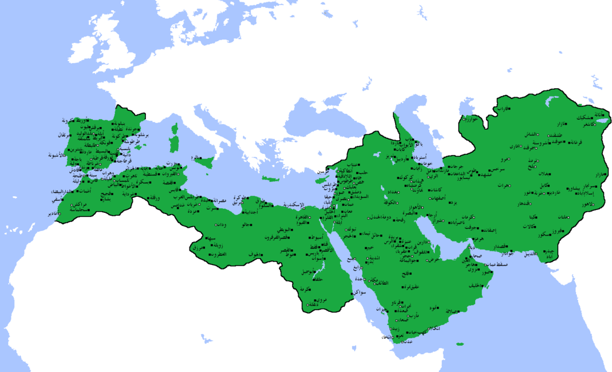

عزيزي القارئ هذه المعلومات من مصادر موثوفة وأخذناها من كتاب العهد الاموي للمؤرخ السوري محمود شاكر ننصحكم بعدم زيارة أي موقع إلا بالتحقق من مصدر المعلومات اللتي قدمها
في هذ الصفحة سوف نتحدث عن أقوى خلافة في الخلافات الاسلامية واكثرهم نفوذا ومساحه والتي حكت من الاندلس حتا غرب بلاد الصين وهي الدولة الاموية نسبة الى بني امية ومؤسسها معاوية بن ابي سفيان رضي الله عنه وارضاه
اهم الشخصيات : معاوية بن ابي سفيان و يزيد بن معاوية والوليد ابن عبد الملك ومروان ابن الحكم
**الدولة الأموية:** **1. النشأة (661 - 750 م):** - تأسست الدولة الأموية عقب اغتيال الخليفة الرابع علي بن أبي طالب في 661م، حيث تولى معاوية بن أبي سفيان الخلافة. - المعركة الرئيسية في هذه المرحلة هي معركة الجمل (656م) بين أطراف مسلمة، ومعركة صفين (657م) بين المعاوية والإمام علي. - مقتل الإمام علي في 661م أدى إلى تأسيس الدولة الأموية. **2. الازدهار (661 - 750 م):** - الأمويون حققوا ازدهاراً اقتصاديًا وثقافيًا خلال فترة حكمهم. - المدينة الأموية دمشق كانت مركز الحضارة والتقدم. **3. الاختتام والتفكك (750 م):** - المعركة الشهيرة هي معركة الزاب (750م) بين العباسيين بقيادة أبو العباس والأمويين بقيادة الملك المعتصم. - الهزيمة الأموية في الزاب أدت إلى انهيار الدولة الأموية. - عبد الله بن الزبير، آخر أمير أموي، قتل في مكة في 750م، وبذلك انتهت الدولة الأموية. **4. الهجرة إلى الأندلس:** - بقية أفراد الأسرة الأموية لاذوا بالفرار إلى الأندلس (إسبانيا)، حيث أسسوا الأمويين الأندلسيين واستمروا في حكمهم هناك. تتسم حكاية الدولة الأموية بالتنوع والازدهار في بعض الفترات، ولكنها انتهت بسبب الصراعات الداخلية والهزائم العسكرية. استمر تأثير الأمويين في التاريخ الإسلامي والأندلس حتى القرون الوسطى. الدولة الأموية شهدت عدة ملوك أمويين خلال فترة حكمها. إليك بعض أبرز ملوك الدولة الأموية: 1. **معاوية بن أبي سفيان (661 - 680):** - كان أول خليفة أموي بعد تأسيس الدولة الأموية، وقاد الجيش في معركة صفين ضد الإمام علي. 2. **يزيد بن معاوية (680 - 683):** - ورث الخلافة من والده معاوية، وكان في حكم الدولة أثناء مأساة كربلاء. 3. **معاوية الثاني (683 - 684):** - ابن يزيد بن معاوية، تولى الخلافة بعد قتل والده في انتفاضة الحسين في كربلاء. 4. **الوليد بن عبد الملك (705 - 715):** - اعتبر من بين أمهر حكام الدولة الأموية، وقاد حملات عسكرية ناجحة. 5. **عمر بن عبد العزيز (717 - 720):** - اعتبر أحد أفضل الخلفاء الأمويين، وشهدت فترة حكمه إصلاحات اقتصادية واجتماعية. 6. **هشام بن عبد الملك (724 - 743):** - حكم لفترة طويلة وشهدت فترة حكمه استقراراً ورقياً في العلوم والفنون. 7. **الوليد الثاني (743 - 744):** - ابن هشام بن عبد الملك، حكم لفترة قصيرة. 8. **مروان الثاني (744 - 750):** - انتهت حكم الأمويين بقيادته بعد هزيمته في معركة الزاب عام 750م. يرجى مراعاة أن حكم بعض هؤلاء الملوك قد انتهى بطرق مختلفة، ولكنهم كانوا جميعًا جزءًا من الفترة الزمنية لحكم الدولة الأموية.